Create a section view using non-associative planes
This section uses only one cutting plane.
-
Choose the PMI tab→Model Views group→Section by Plane command
 .
.The command selects the Base Reference Plane Top (xy) as Cutting Plane 1.
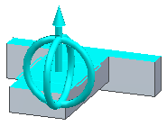
Note:To adjust the cutting plane position, click the direction arrow. To rotate the cutting plane, click one of the rings. You can flip the cut direction by clicking Flip Cut Direction button on the command bar. You can also flip the direction by pressing the f key or by double-clicking the arrow.
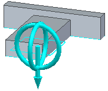
-
Right-click or click the Accept button. This creates the cutting plane and moves to the Select Parts step. Right-click again to complete the Select Parts step.
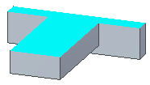
Note:In the Select Parts step, you can select which bodies are to participate in the cut.
-
Click Finish to complete the section view creation.
-
Notice the new collection in PathFinder named Section Views.
Select the box in front of the Section Views collection to display the section views. To display a particular section view, select the box in front of the section name. To edit a section view, right-click on the section in PathFinder and select Edit Definition or double-click the section in PathFinder. To change the section display, right-click on the section in PathFinder and select Section Display Options to open the Section Display Options dialog box.
This section uses two cutting planes.
-
In PathFinder, double-click the section.
-
On the command bar, click the Cutting Plane Step.
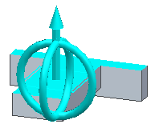
-
On the command bar, click Add Cutting Plane
 .
.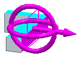
-
Right-click or click Accept.
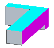
-
Now that two cutting planes are defined, you can choose how the planes are to cut the model. Click the Bounded button
 . You can also press the b key.
. You can also press the b key.The Bounded option cuts the model using all included planes and plane intersections to create a bounded cut area.
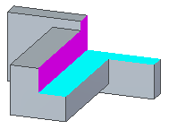
-
Click Finish to complete the section view creation.
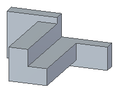
This section uses three cutting planes.
-
In PathFinder, right-click the section and select Edit Definition.
-
On the command bar, click the Cutting Plane Step.
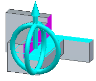
-
On the command bar, click Add Cutting Plane
.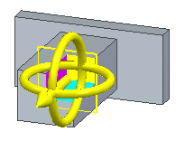
-
Right-click or click Accept.
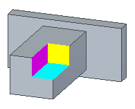
-
With three cutting planes defined, you can choose how the planes are to cut the model. Click Through All
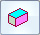
. You can also press the a key.The Through All option cuts through the entire model using all included planes and specified parts.
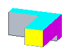
-
Click Bounded
. -
Click Finish to complete the section view creation.
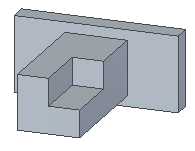
How do I
Create a 3D section view (synchronous environment)Create a 3D section view (ordered environment)
Edit a 3D section view
Apply or remove a section cut
Expose a 3D section in a drawing
Create a section view using associative planes
Learn more
3D section views of modelsLook up more details
3D section view editing commandsProperties command (3D section views)
Section Display Options command (3D section views)
Section Display Options dialog box
Section Options dialog box (3D sections)
Section command bar (synchronous environment)
Section command bar (ordered environment)
Edit Profile command (3D section views)
Section command (Part, Sheet Metal, and Assembly)
Section by Plane command
Section by Plane command bar
Section by Plane Options dialog box